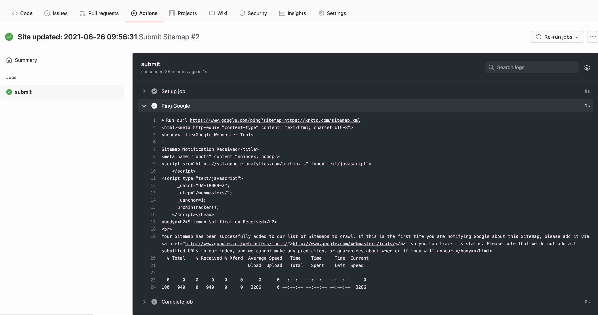

This blog is built with Hexo and deployed to GitHub using the traditional hexo deploy approach. Recently I wanted a workflow that would automatically submit the latest sitemap to Google whenever I published a new post. This article records the setup.
Create the workflow
GitHub Actions workflows are configured with YAML files under .github/workflows in the Git repository.
In a Hexo project, you can create the path and file ahead of time inside source, so that the generated output contains the workflow file directly.
Create source/.github/workflows/sitemap.yml with the following content:
1 | # workflow to summit Sitemap to google, etc. |
This workflow is very simple: every push to the master branch triggers a request to Google for the sitemap.
I did not figure out a similar curl-based way to submit a sitemap to Baidu at the time, so this example only handles Google.
Configure Hexo to include hidden directories
Without extra configuration, the hidden .github directory will not be included when Hexo generates the static site. You need to explicitly allow it.
Open Hexo’s _config.yml and add:
1 | include: |
You also need to adjust skip_render, otherwise Hexo may transform the YAML file instead of leaving it untouched for GitHub:
1 | skip_render: |
Finally, update the Hexo deploy configuration so hidden files are not ignored:
1 | deploy: |
Test it
After making the changes, test with:
1 | hexo clean |
Then check whether the workflow file was generated under public:
1 | ls public/.github/workflows/sitemap.yml |
If the file exists in public, you can deploy it:
1 | hexo deploy |
Then check GitHub to confirm that .github/workflows was uploaded and that the workflow has already run successfully:

That is all.